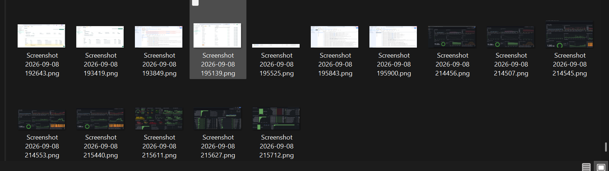

Live Monitoring
Cloud Run & Database Overview
Cloud Run CPU utilization, API response latency, request rate, database CPU, current DB connections, database response time, total requests, status codes and error rate tracking.